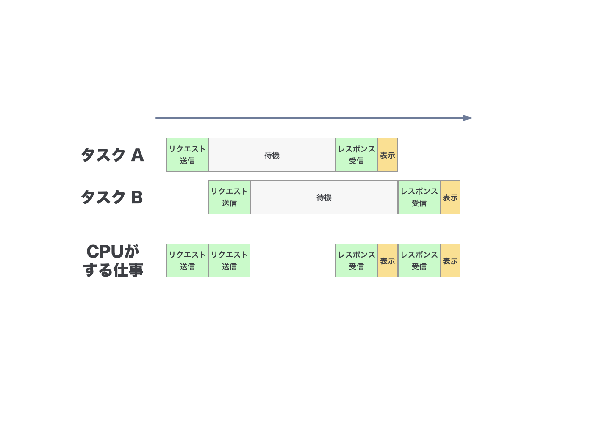

非同期プログラミング
JSでの並列処理
- JSはシングルスレッド
非同期プログラミング
複数のことを同時に処理するため 非同期プログラミング を行う
同期的に処理するとムダで遅い仕事も

非同期に処理すると効率よくて速い 
JS での非同期プログラミング方法
- コールバック関数
- イベント
- Promise
その他 (Generator, Async Functions, Stream, etc...)
最近は Web Worker がある ^
- Node.jsではマルチプロセスプログラミングが可能 ^